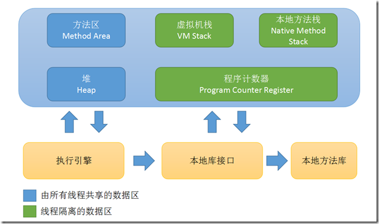

Java虚拟机
Java虚拟机
1 | // cmd 查看默认JVM参数 |
常见JVM
JVM总体架构
JVM= 类加载器classloader+ 执行引擎executionengine+ 运行时数据区域runtime data area- 首先Java源代码文件被Java编译器编译为字节码文件，然后JVM中的类加载器加载完毕之后，交由JVM执行引擎执行。在整个程序执行过程中，JVM内存会用来存储程序执行期间需要用到的数据和相关信息。
- ClassLoader
- Classloader把硬盘上的class文件加载到JVM中的运行时数据区域，但是它不负责这个类文件能否执行，而这个是执行引擎负责的
- 执行引擎
- 执行字节码，或者执行本地方法
1.内存结构

- JDK1.7已经把串常量池【运行时常量池的一部分】转移到堆里面了
1.1程序计数器
当前线程所执行的字节码(.class)的下一条指令地址指示器，分支、循环、跳转、异常处理、线程恢复等功能都需要依赖这个计数器来完。
- 线程私有
- 如果正在执行的是Java方法——记录正在执行的下一条字节码指令的地址
- 如果正在执行的是Native方法——空（Undifined）
- 唯一一个在JVM规范中没有规定任何OutOfMemoryError的情况区域
1.2Java虚拟机栈
- 每个线程运行时所需要的内存，称为虚拟机栈
- 线程私有
- 每个方法在执行的同时都会创建一个栈帧，描述Java方法执行的内存模型
- 栈帧（Stack Frame）
- 每个方法在执行时创建一个栈帧（内存结构）
- 存储局部变量表、操作数栈、动态链接、方法出口等信息。
- 方法调用到执行完成的过程，对应栈帧在虚拟机中入栈到出栈的过程
局部变量表【最常说的“栈”】
- 存放了各种基本类型、对象引用和returnAddress类型（指向了一条字节码指令地址）
- 其中64位长度long 和 double占两个局部变量空间，其他只占一个
- 空间大小在编译时确定，运行期间不会改变局部变量表的大小
规定的异常情况
线程请求的栈的深度大于虚拟机所允许的深度，将抛出StackOverflowError异常
如果虚拟机可以动态扩展，如果扩展时无法申请到足够的内存，就抛出OutOfMemoryError异常
1
2
3
4
5
6
7
8
9
10
11
12
13
14
15
16
17
18
19
20
21
22
23
24
25
26
27
28
29//交叉引用，导致数据过多，栈帧过大
public class StackOverFlow {
public static void main(String[] args) throws JsonProcessingException {
Dept dept = new Dept();
dept.setName("Market");
Emp e1 = new Emp();
Emp e2 = new Emp();
e1.setName("zx");
e2.setName("hkw");
e1.setDept(dept);
e2.setDept(dept);
dept.setEmp(Arrays.asList(e1,e2));
ObjectMapper mapper = new ObjectMapper();
//输出对象的Json字符串
System.out.println(mapper.writeValueAsString(dept));
//{name: 'Market',
// emps: [
// {name: 'zx', dept:{name:'Market', emps: [ ....]} },] }
}
}
class Dept{
private String name;
private List<Emp> emp;
}
class Emp{
private String name;
private Dept dept;
}
栈内存空间越大越好么？
答： 因为物理内存大小是一定的，内存空间越大会导致线程数量减少，栈是由多个栈帧组成，内存增大，只是将可以容纳栈帧的数量增多，除了可以调用更多的方法(递归)，没有其他的作用
假设物理内存500M，栈内存1M->2M，500->250个线程同时运行
- -Xss设置栈内存大小，一般-Xss=1M。
垃圾回收是否涉及到栈内存？
答： 不会涉及。因为虚拟机栈对应着一个线程的执行过程，在执行过程中，活动栈帧不断随着该方法的运行结束而弹出，直到线程执行完成，栈为空，消失。即一个线程执行完毕，线程栈消失。线程的局部变量是否线程安全？
答： 不一定。方法内的局部变量且没有逃离方法的作用访问时，是线程安全的。如果局部变量引用了对象，由于对象存在于堆中，一般其他线程可以访问修改，需要考虑线程安全。线程诊断
- cpu占用过多
- 定位进程，top找出占用cpu过多的进程PID
- ps -H -eo pid,tip,%cpu | grep PID 找出该进程下占用过大的线程 TID
- jstack pid 查看进程中各线程的详细信息，可以看出问题所在。注意：这里TID为十六进制，TID转换为16进制。
- 运行迟迟没结果
- jstack pid 查看进程中各线程的详细信息，拉到最后，发现死锁问题。
- cpu占用过多
1.3本地方法栈
与虚拟机栈（执行Java方法服务）相同，本地方法栈为JVM用到的的Native方法服务
protected native 0bject C lonet) throws CloneNotSupportedException;
- Sun HotSpot直接将虚拟机栈 & 本地方法栈二合一
1.4Java堆（GC堆）
所有的对象实例以及数组都在堆上分配
在虚拟机启动时创建
线程共享
堆可细分为新生代和老年代【目的：更好的回收内存】
- 新生代可细分为Eden空间、From Survivor空间、To Survivor空间
堆中没有实例内存可以分配扩展时，抛出OutOfMemoryError异常
1
2
3
4
5
6
7
8
9
10
11
12
13
14
15
16
17
18//List对象始终被关联，无法被回收，死循环不断将list规模变大，最终大于堆内存大小，内存溢出。
public class Demo1_5 {
public static void main(String[] args) {
int i=0;
try {
List<String> list = new ArrayList<>();
String a = "hello";
while (true) {
list.add(a); // he1lo, hellohe1lo, hellohellohellohello ...
a= a+a; // hellohellohellohello
i++;
}
}catch (Throwable e) {
e.printStackTrace();
System.out.println(i);
}
}
}jps
- 查看系统有哪些进程
查看堆内存使用情况
jmap -heap PID1
2
3
4
5
6
7
8
9
10
11
12
13
14
15
16
17
18
19
20
21
22
23
24
25
26
27
28
29
30
31
32
33
34
35
36
37
38
39
40
41
42
43
44
45
46Attaching to process ID 84956, please wait...
Debugger attached successfully.
Server compiler detected.
JVM version is 25.231-b11
using thread-local object allocation.
Parallel GC with 8 thread(s)
Heap Configuration:
MinHeapFreeRatio = 0
MaxHeapFreeRatio = 100
MaxHeapSize = 3995074560 (3810.0MB)
NewSize = 83886080 (80.0MB)
MaxNewSize = 1331691520 (1270.0MB)
OldSize = 167772160 (160.0MB)
NewRatio = 2
SurvivorRatio = 8
MetaspaceSize = 21807104 (20.796875MB)
CompressedClassSpaceSize = 1073741824 (1024.0MB)
MaxMetaspaceSize = 17592186044415 MB
G1HeapRegionSize = 0 (0.0MB)
Heap Usage:
PS Young Generation
Eden Space:
capacity = 62914560 (60.0MB)
used = 57904552 (55.222084045410156MB)
free = 5010008 (4.777915954589844MB)
92.03680674235027% used
From Space:
capacity = 10485760 (10.0MB)
used = 0 (0.0MB)
free = 10485760 (10.0MB)
0.0% used
To Space:
capacity = 10485760 (10.0MB)
used = 0 (0.0MB)
free = 10485760 (10.0MB)
0.0% used
PS Old Generation
capacity = 167772160 (160.0MB)
used = 0 (0.0MB)
free = 167772160 (160.0MB)
0.0% used
3170 interned Strings occupying 260160 bytes.jconsole
- 图形界面，多功能检测工具，连续监测
1.5方法区（具体实现方式：元空间/永久代）
JDK1.6
- 方法区是堆逻辑划分中的一个区域，对应hotspot jdk6中的永久代，可以说永久代是方法区在hotspot的一个具体实现
图中 常量池—>运行时常量池
永久代空间不足才会触发FullGC的垃圾回收，导致回收效率不高【其中的字符串常量池使用频繁，回收效率不高会导致占用大量的内存】
从jdk7以后方法区就“四分五裂了”，不再是在单一的一个区域内进行存储。
jdk1.7
- 永久代概念存在，并没完全移除
- 存储在永久代的部分数据就已经转移到了Java Heap或者是 Native Heap
- 永久代只存储类和类加载器的元数据信息
- 符号引用(Symbols)转移到了native heap
- 字面量(interned strings)转移到了java heap
- 类的静态变量(class statics)转移到了java heap
JDK1.8
彻底移除了永久代，新增了元空间（Metaspace）的概念
元空间并不在虚拟机中，而是使用本地内存
元空间中也是存储只存储类和类加载器的元数据信息
符号引用(Symbols)转移到了native heap
字面量(interned strings)转移到了java heap
类的静态变量(class statics)转移到了java heap
图中 常量池—>运行时常量池
存储的内容几乎没怎么变化，都是用于存储类信息（类的版本/字段/方法/接口），常量，静态变量，及时编译器编译后的代码等数据，而是在内存限制、垃圾回收等机制上改变较大。
线程共享
对这块区域主要是针对字符串常量池回收
此区域垃圾回收目标：针对字符串常量池的回收【主要】和对类型的卸载
- JDK1.7开始已经把字符串常量池转移到堆里面了。
- 由于使用反射机制的原因，虚拟机很难推测哪个类信息不再使用
使用本地内存（之前是在jvm中），不在虚拟机中，没有设置限制参数时只受物理内存大小限制，即只有占满了操作系统可用内存后才OOM。
1
2
3
4
5
6
7
8
9
10
11
12
13
14
15
16
17
18
19
20
21/** 演示元空间内存溢出java.lang.OutOfMemoryError: Metaspace **/
// -XX:MaxMetaspaceSize=8m
public class Demo1_8 extends ClassLoader {// 可以用来加载类的二进制字节码
public static void main(String[] args) {
int i=0
try {
Demo1_8 test = new Demo1_8();
for(inti=0;i<10000;i++,j++){
// Classwriter作用是生成类的二进制字节码
ClassWriter CW = new ClassWriter(0);
//版本号，public, 类名，包名，父类，接口
CW.visit(Opcodes.V1_8, Opcodes.ACC_PUBLIC, "Class" + i, nu1l, "java/lang/object", null);
//返回byte[]
byte[] code = CW.toByteArray();
// 执行了类的加载
test.defineClass("Class" + i, code, 0, code.length); // Class 对象
} finally {
System.out.println(i);
}
}
}- 解决了以前永久代的OOM问题，元数据和class对象存在永久代中，容易出现性能问题和内存溢出，毕竟是和老年代共享堆空间【场景：spring mybatis 都可能会通过cglib产生大量的class对象】
- java8后，永久代升级为元空间独立后，也降低了老年代GC的复杂度
1.5.1运行时常量池[JDK1.7概念：方法区的一部分]
- 存放各种字面量（字符串，final的常量池），符号引用（类/接口/全限定类名，字段名称描述符，方法名称描述符…）等，其空间从方法区域（JDK1.7后为堆空间）中分配。
1.5.2常量池 & 运行时常量池 & 字符串池
Class文件常量池（class constant pool）：class文件中除了包含类的版本、字段、方法、接口等描述信息外，还有一项信息就是常量池(constant pool table)【就是一张表】，用于存放编译器生成的各种字面量(Literal)和符号引用(Symbolic References)。
- 字面量就是我们所说的常量概念，如文本字符串、被声明为final的常量值等。
- 符号引用是一组符号来描述所引用的目标，符号可以是任何形式的字面量，只要使用时能无歧义地定位到目标即可。
- 类和接口的全限定名
- 字段名称和描述符
- 方法名称和描述符
运行时常量池：常量池是
*.class文件中的，当该类被加载，它的常量池信息就会放入运行时常量池，并把里面的符号地址变为真实地址字符串常量池
- 字符串常量池里的内容是在类加载完成，经过验证，准备阶段之后在string pool中生成字符串对象实例【家养】
- 在HotSpot VM里实现的string pool功能的是一个StringTable类，它是一个哈希表。这个StringTable在每个HotSpot VM的实例只有一份，被所有的类共享。
Java语言并不要求常量一定只有编译期预置入Class的常量表的内容才能进入方法区常量池，运行期间也可将新内容放入常量池（最典型的String.intern()方法）
当常量池无法在申请到内存时会抛出OutOfMemoryError异常
1.5.3常量池和串池的关系
Class文件常量池中的都会被加载到运行时常量池中，此时字符串都是常量池中的（字面量）符号，尚且未转化为对象【字符串延迟加载】
1
2
3
4
5
6String s1 = "a";
//java.lang.string.count = 2361
String s2 = "b";
//java.lang.string.count = 2362
String s3 = "ab";
//java.lang.string.count = 2363运行时，将String字面量符号“a”转化为字符串对象，并在StringTable中寻找“a”，如多没有则添加“a”字符串对象。
StringTable 结构为HashTable，且不能扩容。
## 1.6直接内存
不是虚拟机运行时数据区的一部分，也不是Java虚拟机规范中定义的内存区域，读写性能高，不受JVM内存回收管理
堆外内存，又称直接内存。这部分内存不由jvm管理和回收的，需要我们手动的回收，分配回收成本较高
堆内内存是属于jvm的，由jvm进行分配和管理，属于”用户态”，而堆外内存是由操作系统管理的，属于”内核态”
JDK1.4加入了NIO，引入一种基于通道与缓冲区的I/O方式，它可以使用Native函数库直接分配堆外内存，然后通过一个存储在Java堆中DirectByteBuffer对象作为这块内存的引用进行操作。因为避免了在Java堆和Native堆中来回复制数据，提高了性能。
当各个内存区域总和大于物理内存限制，抛出OutOfMemoryError异常
1
2
3
4
5
6
7
8
9
10
11
12
13public static void main(String[] args) {
List<ByteBuffer> list = new ArrayList<>();
int i = 0;
try {
while(true){
ByteBuffer byteBuffer = ByteBuffer.allocateDirect(100*1024*1024);
list.add(byteBuffer);
i++;
}
}finally {
System.out.println(i);
}
}
1.6.1直接内存优点
- 对于频繁的IO操作，我们需要不断把内存中的对象复制到直接内存。然后由操作系统直接写入磁盘或者读出磁盘。这时候用到直接内存就减少了堆的内外内存来回复制的操作。
- 我们在运行程序的过程中可能需要新建大量对象，对于一些声明周期比较短的对象，可以采用对象池的方式。但是对于一些生命周期较长的对象来说，不需要频繁调用gc，为了节省gc的开销，直接内存是必备之选。
- 扩大程序运行的内存，由于jvm申请的内存有限，这时候可以通过堆外内存来扩大内存
1.6.2直接内存使用前和使用后
使用前
- 因为java无法操作本地文件，在java堆内存中划出java缓冲区；
- 从用户态转移到内核态，本地方法在系统内存中划出一段系统缓冲区，将磁盘文件分部分缓冲到系统缓冲区中，间接的将系统缓冲区中数据传输到java缓冲区中
- 内核态转到用户态，调用输出流写入操作，将文件copy到另一个位置，循环copy，直到全部复制完成。
使用后
- ByteBuffer.allocateDirect(_size)，在系统内存中分配直接内存
- 系统方法和java方法都可以访问直接内存；
- 与不使用直接内存相比，减少了一次从系统缓存区向java缓冲区复制的操作，复制效率成倍上升。
分配和回收原理
使用Unsafe对象实现直接内存的分配回收，回收主要使用的是freeMemory方法
ByteBuffer类内部，使用了Cleaner（虚引用）来检测ByteBuffer对象，一旦对象被回收，就会由ReferenceHandler线程通过Cleaner的clean对象调用freeMenory来释放直接内存。
-XX:+DisableExplicitGC 显式的System.gc()显式的垃圾回收 FULL GC，被禁用
1
2
3
4
5
6
7
8
9
10
11
12
13
14
15public class Demo1_26 {
static int _1Gb = 1024 * 1024 * 1024;
/*
* -XX: +DisableExplicitGC 禁用显式的System.gc()
*/
public static void main(String[] args) throws I0Exception {
ByteBuffer byteBuffer = ByteBuffer.allocateDirect(_1Gb) ;
System.out.println("分配完毕...");
System.in.read();
System.out.println("开始释放...");
byteBuffer = null;
System.gc(); //显式的垃圾回收, Fu1l GC 回收新生代和老年代 时间较长
System.in.read();
}
}因为考虑到系统性能，FULL GC时间够长，会严重影响性能。所以涉及到直接内存的使用，释放内存使用Unsafe.freeMemory，不建议使用System.gc()。
1
2
3
4
5
6
7
8
9
10
11
12
13
14public class Demo1_27 {
static int _1Gb = 1024 * 1024 * 1024;
public static void main(String[] args) throws IOException {
Unsafe unsafe = getUnsafe();
//分配内存
long base = unsafe.allocateMemory(_1Gb);
unsafe.setMemory(base,_1Gb, (byte)0);
System.in.read();
//释放内存
unsafeJ.freeMemory(base);
System.in.read();
}
public static Unsafe getUnsafe() {...}
}
1.7堆参数设置
- 以-X开头的都是非标准的（这些参数并不能保证在所有的JVM上都被实现），而且如果在新版本有什么改动也不会发布通知
- 以-XX开头的都是不稳定的并且不推荐在生产环境中使用。这些参数的改动也不会发布通知。
-XX:+<option>表示开 启option选项-XX:-<option>， 表示关闭option选项-XX:<option>=<value>， 表 示将option选项的值设置为value
整个JVM内存大小= 年轻代/新生代+ 老年代
注：元空间（古称：永久代）已从JVM老年代的堆空间中移除
- -Xmx2G（memory max）
- 设置JVM最大可用内存为2G
- -Xms1G（memory size）
- 设置JVM初始可用内存为1G
- -Xmn500M
- 设置新生代内存为500M。
- -XX:ServivorRatio=3
- 新生代中划分为Eden区，from Survivor区， to Survivor区
- 默认大小8：1：1，现在调整为3：1：1
- -XX:NewRatio=3:
- 年轻代与年老代比值为1：3
- -XX:NewSize
- 设置新生代大小
- XX:MaxNewSize
- 新生代最大大小
- -XX:MaxPermSize=64M【已弃用】
- 永久代大小为64M
- -XX:MetaspaceSize
- 初始空间大小，达到该值就会触发垃圾收集进行类型卸载，同时GC会对该值进行调整：如果释放了大量的空间，就适当降低该值；如果释放了很少的空间，那么在不超过MaxMetaspaceSize时，适当提高该值
- -XX:MaxMetaspaceSize
- 元空间大小空间，默认是没有限制的
实例：
-Xms20M -Xmx20M -Xmn10M -XX:+UseSerialGC -XX:+PrintGCDetails -verbose:gc
原文作者: 掘金木匠
原文链接: http://goldcarpenter.github.io/2019/07/05/JVM_Part1/
版权声明: 转载请注明出处(必须保留作者署名及链接)